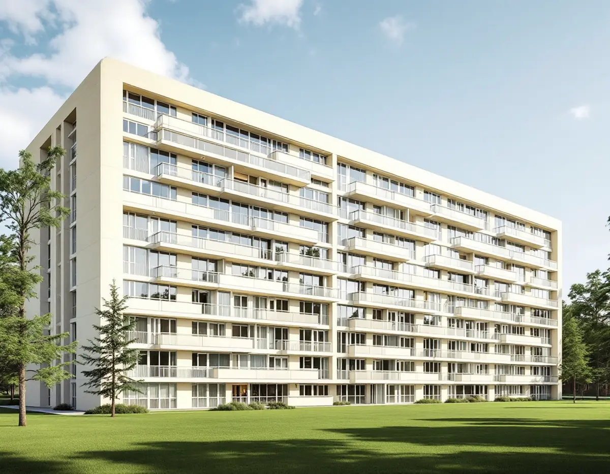
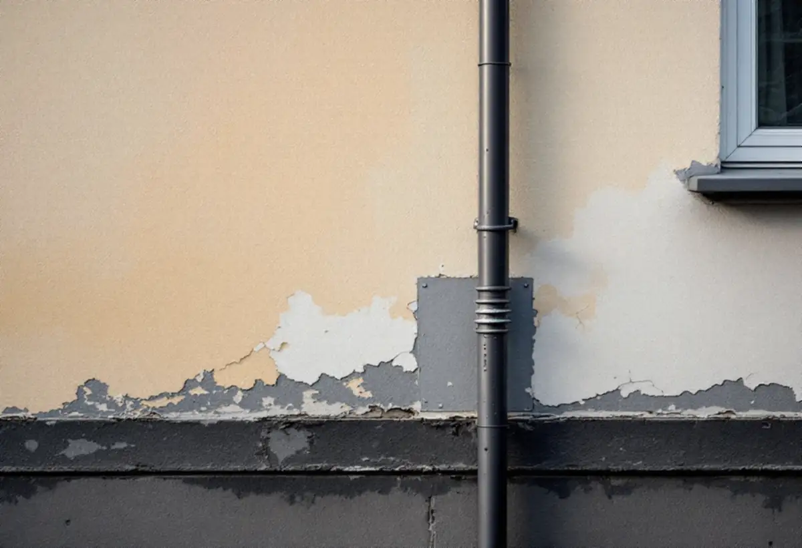
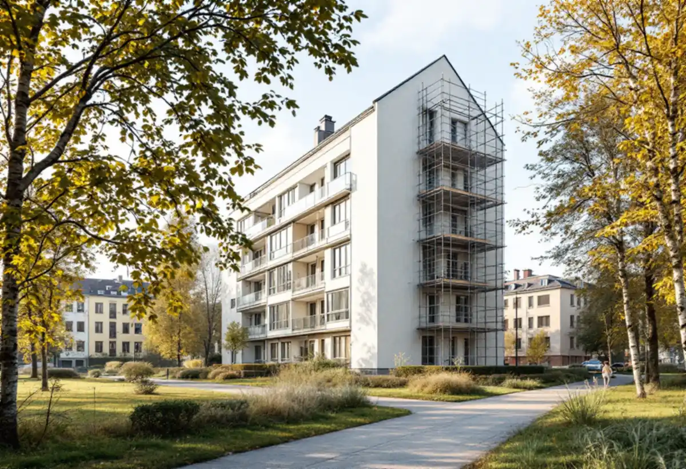

Genomgång
Vi går runt huset, knackar på putsen och noterar sprickor, bom och missfärgade partier.
På ett funkishus finns ingen dekor att gömma lagningarna bakom. Putsen är själva arkitekturen, och varje fläck med fel struktur syns på långt håll. Geal Entreprenad AB renoverar putsfasader på Kungsholmen åt bostadsrättsföreningar och fastighetsägare, från funkishusen i Fredhäll och Kristineberg till stenstadens kvarter.

Omkring 1930 började, enligt stadens översiktsplan, en ny typ av stadsdelar byggas utifrån funktionalismens stilideal. I innerstaden uppfördes de framför allt i utkanterna, och planen nämner Fredhäll och Kristineberg bland exemplen. Idealet var fristående huskroppar med öppna, gröna gårdar – inte slutna kvarter som i stenstaden.
Stockholms läns museum beskriver hur putsen blev mycket populär under funktionalismen på 1930-talet, och att den på 1930- och 40-talets funkishus är en viktig del av arkitekturen. Den släta putsen kan antingen följa murens yta eller dölja ojämnheter i underlaget, medan spritputs innehåller grus eller sten som ger ytan karaktär. Traditionellt görs puts av kalk, sand och vatten, kalkputs eller k-bruk. Efter 1940-talet började man enligt museet tillsätta cement för att göra putsen starkare, kc-bruk, med nackdelen att skiktet blev mindre elastiskt i förhållande till underlaget. Vilket bruk ett enskilt hus har går därför inte att gissa sig till av årtalet – vi tar prov innan vi väljer lagningsbruk.

Boverket skriver att de vanligaste skadorna på putsade fasader är sprickor och putsbortfall, och att putsbortfall i de allra flesta fall beror på fukt. Kalkputs kan suga upp, transportera och avge fukt utan att stommen skadas, men får putsen för stor fuktbelastning uppstår skador, och fuktig puts kan frysa sönder om fukten blir kvar över vinterhalvåret. Där stuprör är infästa och där fasaden ansluter mot fönster och dörrar behövs enligt Boverket tätning i mer än en nivå, så kallad tvåstegstätning, om detaljerna utsätts för slagregn.
Tilläggsisolering är en åtgärd att väga noga på ett putsat hus. Boverket konstaterar att en tjockare isolering gör att mindre värme läcker ut i ytterväggen, så att väggens yttre delar blir kallare – och att putsade fasader då kan få svårt att torka ut och skadas. I sin energiguide varnar Boverket också för att fönster och dörrar kan hamna längre in i fasaden och takfoten skjuta ut mindre, men nämner exempel på putsade funkishus där takfot, sockel och entréns skärmtak byggts på och fönster och dörrar flyttats ut så att det yttre utseendet är oförvanskat. Stockholms stad räknar tilläggsisolering som en fasadändring, och för ett flerbostadshus krävs bygglov när ändringen görs på en fasad som vetter mot allmän plats.
I stenstaden är det i regel bara gatufasaden som vetter mot allmän plats. Ett fristående funkishus kan i stället ha både gata, park och gångväg runt sig, och då kan fler sidor av huset omfattas av lovplikten. Allmän plats är enligt plan- och bygglagen en gata, en väg, en park, ett torg eller ett annat område som enligt en detaljplan är avsett för ett gemensamt behov. Detaljplanen finns enligt staden i e-tjänsten Bygg- och plantjänsten, och fasadändringar som inte kräver lov ska ändå stämma med planen. Vi går därför igenom planen innan föreningen bestämmer kulör eller material.
Det är också föreningen som beslutar. Bostadsrättslagen säger att föreningen ska hålla huset i gott skick, i den mån ansvaret inte vilar på bostadsrättshavaren. Enligt stadens områdesfakta 2025 har Fredhäll 3 830 bostäder, varav 2 219 bostadsrätter, och inte ett enda småhus. Kristineberg har 4 598 bostäder, varav 3 243 bostadsrätter, och ett småhus. I hela Kungsholmens stadsdelsområde fanns 2024 337 bostäder i småhus av totalt 44 554, och 272 av dem var äganderätter. Om fönstren i samma fasad, se fönsterrenovering på Kungsholmen, och om målning inne i lägenheten målare på Kungsholmen.

Vi går runt huset, knackar på putsen och noterar sprickor, bom och missfärgade partier.
Ett prov visar om det är kalkputs eller kalkcementputs och vilken struktur ytan har.
Vi tar reda på vilka fasader som vetter mot allmän plats och om lov behövs.
Lagning, omputsning, avfärgning och anslutningar redovisas var för sig.
Lös puts tas ner och ytan putsas om till naturliga gränser, så att skarvarna inte syns.
Fasaden avfärgas med en färg som släpper igenom fukt, och anslutningarna kontrolleras.
För en bostadsrättshavare ger fasadrenoveringen inget rotavdrag: Skatteverket räknar fasader till de gemensamma ytorna, och tilläggsisolering och ställning på utsidan av bostaden ger inte heller avdrag i en bostadsrätt.
Äger du ett av Kungsholmens småhus räknas att byta, mura, reparera och måla fasader som rotarbete. Avdraget är högst 30 procent av arbetskostnaden, med taket 50 000 kr per person och år och 75 000 kr tillsammans med rutavdrag. Material och resor ger inget avdrag, och vi drar avdraget direkt på fakturan.
Fasadens yta och höjd, hur stora fält som måste putsas om för att lagningarna inte ska synas, om anslutningar vid fönster och stuprör ska göras om och vilken färgtyp putsen kräver styr kostnaden. Efter ett gratis platsbesök får styrelsen ett skriftligt kostnadsförslag med varje moment för sig.
Puts, panel och tilläggsisolering.
Fasadrenovering i Stockholm →Stambyte, stämmobeslut och 30-talshus.
Badrumsrenovering på Kungsholmen →Föreningens stambyte.
Byggföretag på Kungsholmen →Stenhusen, funkishusen och bygglovet.
Fönsterbyte på Kungsholmen →Fönstret i bostadsrätten, insida och beslag.
Fönsterrenovering på Kungsholmen →Stegljud, golvval och styrelsens tillstånd.
Golvläggare på Kungsholmen →Slipa och lacka golvet i bostadsrätten.
Golvslipning på Kungsholmen →Fläkten, kanalen och föreningen.
Köksrenovering på Kungsholmen →Funkislägenheter, stadgar och ROT i bostadsrätten.
Målare på Kungsholmen →Ny tapet på putsade lägenhetsväggar.
Tapetsering på Kungsholmen →Hela lägenheten från golv till tak.
Totalrenovering på Kungsholmen →